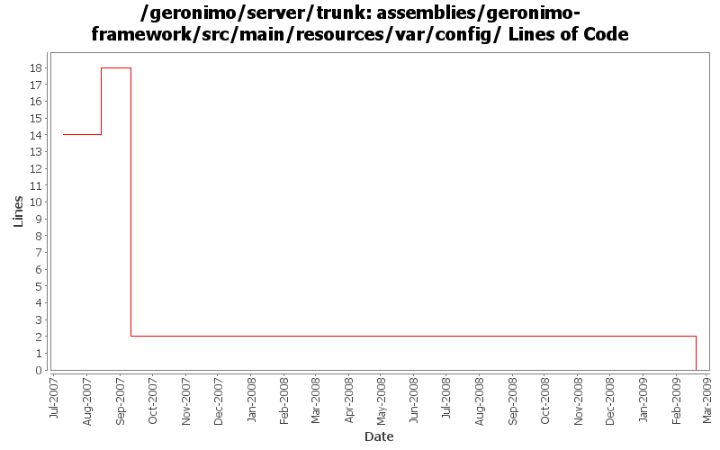

[root]/assemblies/geronimo-framework/src/main/resources/var/config

| Author | Changes | Lines of Code | Lines per Change |
|---|---|---|---|
| Totals | 16 (100.0%) | 16 (100.0%) | 1.0 |
| djencks | 8 (50.0%) | 8 (50.0%) | 1.0 |
| dwoods | 2 (12.5%) | 6 (37.5%) | 3.0 |
| pmcmahan | 1 (6.3%) | 1 (6.3%) | 1.0 |
| jaydm | 5 (31.3%) | 1 (6.3%) | 0.2 |
GERONIMO-4538 Move stuff around so framework is self contained and builds the framework server. No groupId changes in this revision in case people dont like this change
0 lines of code changed in 3 files:
Clean up a lot more configs so geronimo-plugin.xml is reasonable. Make use of local maven repo more likely to work. Trim framework down to actual minimal size.
2 lines of code changed in 1 file:
GERONIMO-3391 fix remoteDeployAddress, which must be a valid URL
1 lines of code changed in 1 file:
GERONIMO-3391 Use the config-substitutions.properties for the Deployer remoteDeployAddress settings
5 lines of code changed in 1 file:
GERONIMO-2286 GERONIMO-1874 GERONIMO-3140 Adjust schema versions for schemas importing new schema versions
1 lines of code changed in 1 file:
GERONIMO-3271 - Update the xml files that currently reference attributes-1.1.xsd to 1.2
1 lines of code changed in 5 files:
point each assembly at the 2.1 plugin repository list
1 lines of code changed in 1 file:
GERONIMO-2735 clean up config substitutions
5 lines of code changed in 1 file:
GERONIMO-3303 Major simplification of authentication framework. Removes remote login and supporting code
0 lines of code changed in 2 files: